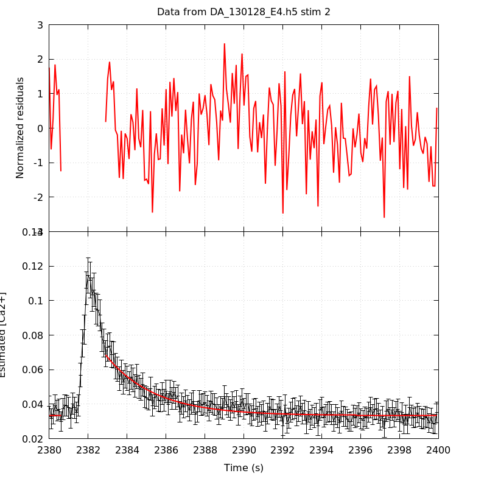
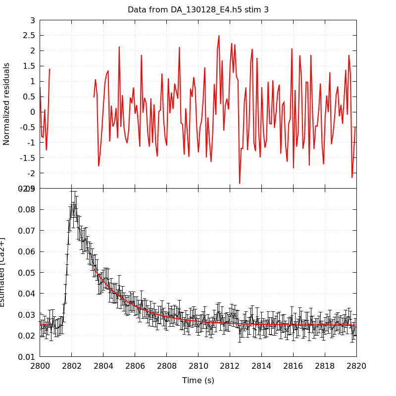
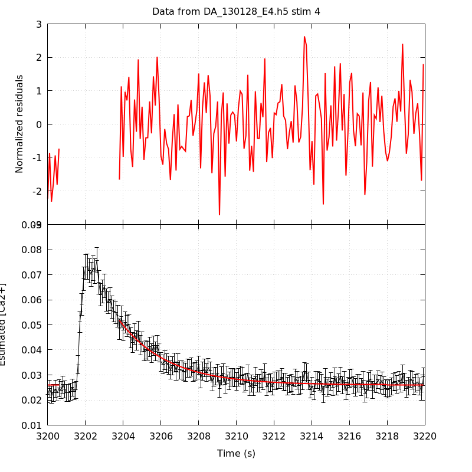
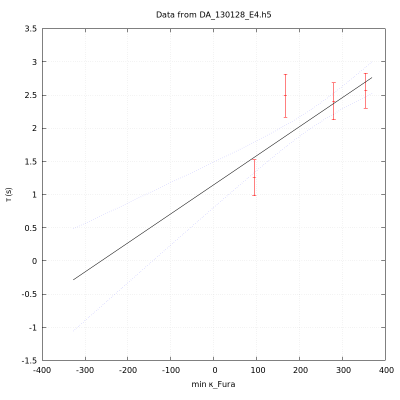
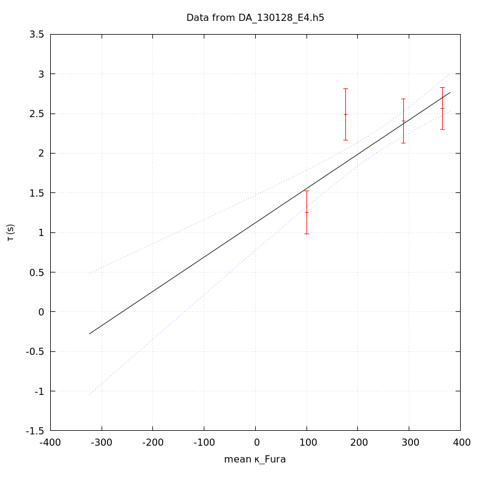

The baseline length is: 7.
When fitting tau against kappa_Fura only the transients for which the fit RSS and the lag 1 auto-correlation of the residuals were small enough, giving an overall probability of false negative of 0.02, were kept (see the numerical summary associated with each transient).
The good transients are: 1, 2, 3, 4.
The time at which the 'good' transients were recorded appear in red.
On each graph, the residuals appear on top. Under the null hypothesis, if the monoexponential fit is correct they should be centered on 0 and have a SD close to 1 (not exactly 1 since parameters were obtained through the fitting procedure form the data.
The estimated [Ca2+] appears on the second row. The estimate is show in black together with pointwise 95% confidence intervals. The fitted curve appears in red. The whole transient is not fitted, only a portion of it is: a portion of the baseline made of 7 points and the decay phase starting at the time where the Delta[Ca2+] has reached 50% of its peak value.
The time appearing on the abscissa is the time from the beginning of the experiment.
Transient 1 is 'good'.

nobs = 181
number of degrees of freedom = 178
baseline length = 7
fit started from point 26
estimated baseline 0.0323933 and standard error 0.000407219
estimated delta 0.039938 and standard error 0.00308493
estimated tau 1.2526 and standard error 0.137453
residual sum of squares: 190.174
RSS per degree of freedom: 1.06839
Probability of observing a larger of equal RSS per DOF under the null hypothesis: 0.252635
Lag 1 residuals auto-correlation: -0.045
Pr[Lag 1 auto-corr. > -0.045] = 0.678
Transient 2 is 'good'.

nobs = 178
number of degrees of freedom = 175
baseline length = 7
fit started from point 29
estimated baseline 0.0334017 and standard error 0.000337176
estimated delta 0.0351155 and standard error 0.00143021
estimated tau 2.4886 and standard error 0.165598
residual sum of squares: 187.229
RSS per degree of freedom: 1.06988
Probability of observing a larger of equal RSS per DOF under the null hypothesis: 0.249999
Lag 1 residuals auto-correlation: 0.087
Pr[Lag 1 auto-corr. > 0.087] = 0.115
Transient 3 is 'good'.

nobs = 173
number of degrees of freedom = 170
baseline length = 7
fit started from point 34
estimated baseline 0.025022 and standard error 0.000235615
estimated delta 0.0268255 and standard error 0.000949547
estimated tau 2.40438 and standard error 0.142914
residual sum of squares: 189.655
RSS per degree of freedom: 1.11562
Probability of observing a larger of equal RSS per DOF under the null hypothesis: 0.143835
Lag 1 residuals auto-correlation: 0.116
Pr[Lag 1 auto-corr. > 0.116] = 0.074
Transient 4 is 'good'.

nobs = 169
number of degrees of freedom = 166
baseline length = 7
fit started from point 38
estimated baseline 0.0260209 and standard error 0.000214631
estimated delta 0.025747 and standard error 0.00078001
estimated tau 2.56488 and standard error 0.135284
residual sum of squares: 180.856
RSS per degree of freedom: 1.08949
Probability of observing a larger of equal RSS per DOF under the null hypothesis: 0.203685
Lag 1 residuals auto-correlation: 0.063
Pr[Lag 1 auto-corr. > 0.063] = 0.224
Transient 5 is a 'bad'.

nobs = 161
number of degrees of freedom = 158
baseline length = 7
fit started from point 46
estimated baseline 0.0277386 and standard error 0.000240653
estimated delta 0.0227467 and standard error 0.000638539
estimated tau 3.10516 and standard error 0.172172
residual sum of squares: 202.398
RSS per degree of freedom: 1.281
Probability of observing a larger of equal RSS per DOF under the null hypothesis: 0.00983743
WARNING: THE FIT IS NOT GOOD!
Lag 1 residuals auto-correlation: 0.121
Pr[Lag 1 auto-corr. > 0.121] = 0.097
Since the [Fura] changes during a transient (and it can change a lot during the early transients), the unique value to use as '[Fura]' is not obvious. We therefore perform 3 fits: one using the minimal value, one using the mean and one using the maximal value.
The observed tau (shown in red) are displayed with a 95% confidence interval that results from the fitting procedure and is therefore meaningful only if the fit is correct!
No serious attempt at quantifying the precision of [Fura] and therefore kappa_Fura has been made since the choice of which [Fura] to use has a larger effect and since the other dominating effect is often the certainty we can have that the saturating value (the [Fura] in the pipette) has been reached.
The straight line in black is the result of a weighted linear regression. The blue dotted lines correspond to the limits of pointwise 95% confidence intervals.

Best fit: tau = 1.1481 + 0.0043762 kappa_Fura
Covariance matrix:
[ +3.04236e-02, -1.10271e-04
-1.10271e-04, +4.81720e-07 ]
Total sum of squares (TSS) = 59.3784
chisq (Residual sum of squares, RSS) = 19.6227
Probability of observing a larger of equal RSS per DOF under the null hypothesis: 5.48249e-05
R squared (1-RSS/TSS) = 0.669531
Estimated gamma/v with standard error: 228.509 +/- 36.2412
Estimates kappa_S with standard error (using error propagation): 261.351 +/- 57.6184
kappa_S confidence intervals based on parametric bootstrap
0.95 CI for kappa_S: [140.717,488.521]
0.99 CI for kappa_S: [110.351,611.801]

Best fit: tau = 1.12301 + 0.00432369 kappa_Fura
Covariance matrix:
[ +3.14373e-02, -1.10554e-04
-1.10554e-04, +4.65504e-07 ]
Total sum of squares (TSS) = 59.3784
chisq (Residual sum of squares, RSS) = 19.2192
Probability of observing a larger of equal RSS per DOF under the null hypothesis: 6.70817e-05
R squared (1-RSS/TSS) = 0.676327
Estimated gamma/v with standard error: 231.284 +/- 36.4966
Estimates kappa_S with standard error (using error propagation): 258.734 +/- 57.9785
kappa_S confidence intervals based on parametric bootstrap
0.95 CI for kappa_S: [137.494,485.882]
0.99 CI for kappa_S: [112.857,614.562]

Best fit: tau = 1.10072 + 0.00428917 kappa_Fura
Covariance matrix:
[ +3.24474e-02, -1.11471e-04
-1.11471e-04, +4.55723e-07 ]
Total sum of squares (TSS) = 59.3784
chisq (Residual sum of squares, RSS) = 19.0097
Probability of observing a larger of equal RSS per DOF under the null hypothesis: 7.449e-05
R squared (1-RSS/TSS) = 0.679855
Estimated gamma/v with standard error: 233.145 +/- 36.6948
Estimates kappa_S with standard error (using error propagation): 255.628 +/- 58.2678
kappa_S confidence intervals based on parametric bootstrap
0.95 CI for kappa_S: [133.344,473.511]
0.99 CI for kappa_S: [105.193,590.883]
4 out of 5 transients were kept.
sigma(tau): 0.137453, 0.165598, 0.142914, 0.135284
Residual correlation at lag 1: -0.04463526866026426, 0.08695044728435182, 0.11605436355963565, 0.06316359160286658
Probablity of a correlation at lag 1 smaller or equal than observed: 0.6779999999999999, 0.11499999999999999, 0.07399999999999995, 0.22399999999999998
RSS/DOF: 1.06839, 1.06988, 1.11562, 1.08949